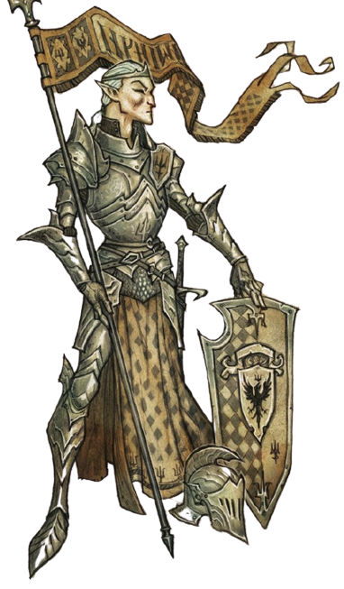
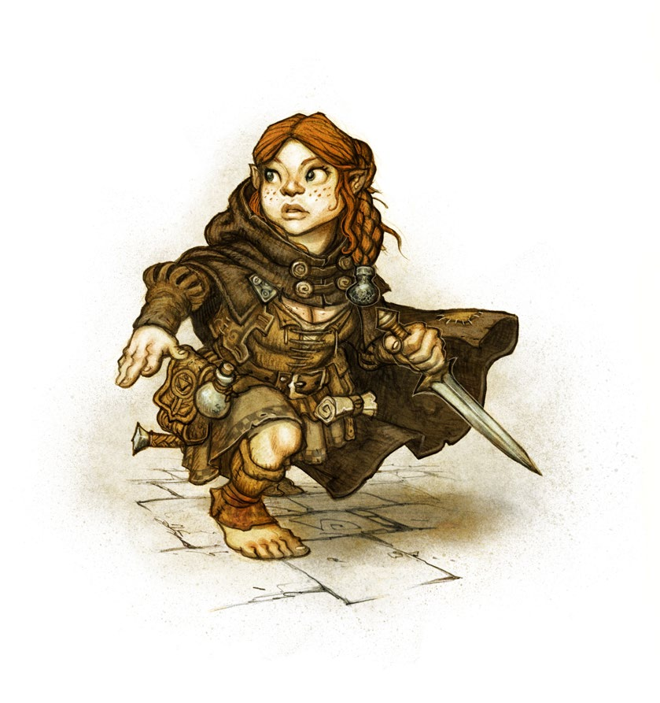

1. 選擇種族
D12 | 種族 | 移動力 |
1-4 | 人類 | 10 |
5-7 | 半身人 | 8 |
8-9 | 矮人 | 8 |
10 | 精靈 | 10 |
11 | 鴨人 | 8 |
12 | 狼人 | 12 |
人類
人類是最晚出現的種族。其他種族都有關於人類誕生之前的歌曲和傳說。如今，人類已經廣泛分布於許多已知的世界。許多人類是農民，住在圍繞著城堡和宮殿的小村莊裡。有些人類是勇士，誓言保護農民和他們脆弱的聚落、市場和商隊免受世界上的危險。還有更多人類是冒險者，他們是冒險進入未知領域的勇敢人類，尋求榮耀、黃金和知識。
種族能力：通權達變
- 意志值：3
當你進行技能檢定時，你可以選擇使用其他技能進行檢定。你必須合理地描述你是如何使用另一項技能。
半身人
半身人是一種矮小的類人種族，通常出現在山林間的農田地帶，他們居住在土屋中，將食物存放在優質的糧倉。他們天性謙虛友善，對家庭的歸屬感很強。半身人既不好戰也沒有野心，但對史詩般的故事和美麗的歌曲有天然的親近感。這種渴望偶爾會促使他們離開家園，去尋找宏偉的冒險。由於他們的脆弱和對「高個子」的恐懼，他們擅長隱藏自己，並迅速脫離危急情況。
種族能力：動如脫兔
- 意志值：3
當你閃避攻擊時，你可以發動此能力，讓你的閃避檢定獲得 1 個優勢。
矮人
矮人是上古民族中最古老的一族，至少根據他們自己的紀錄是如此。他們是極度自豪和傳統的民族，其文化深深根植在古老的習俗和英勇祖先的史詩歌謠中。矮人與大地和世界之根有著強烈的連繫。他們是熟練的鐵匠和工匠，因能夠製作珍貴金屬、鐵和石頭的奇妙物品而受人敬仰。矮人也以武勇著稱，善於揮舞斧頭、戰鎚和其他在地底鐵匠鋪中鍛造的重型近戰武器。
種族能力：刻骨銘心
- 意志值：3
當你攻擊曾經傷害過你（至少 1 點傷害）的人時，你可以發動此能力，讓該次攻擊檢定獲得 1 個優勢。那個人是什麼時候傷害過你一點都不重要，所以你最好將所有傷害過你的人都記下來，以免忘記。

精靈
精靈是一支古老的種族，數千年來一直守護著世界上的森林。他們受星辰指引，認為星辰能夠窺探神祕深奧的神聖存在。精靈文化較為保守內向，有時對外人來說難以理解。驅動他們外出冒險的是比起矮人和人類常見的追求金錢和榮耀更加玄妙的抽象事物。精靈之中也有許多強大的戰士，因劍和弓的技巧而受到吟遊詩人的廣泛尊敬和讚揚。
種族能力：心如止水
- 意志值：—
身為精靈，你可以在短休時進行深度冥想。你可以額外回復 1D6 HP 和 1D6 WP，並恢復一個狀態。你在冥想期間完全無法回應周遭世界，甚至無法被喚醒。
鴨人
鴨人的起源充滿著神祕。有些學者聲稱，他們來自於數千年前被海水吞噬的強大島國，而有些人則認為他們是失敗的魔法實驗結果。不管真相如何，這些有羽毛的類人種族在世界上是常見的景象。他們擅長貿易，焦躁的呱呱聲常常出現在市集和貿易商隊周圍。然而，有些鴨人會作為強盜、海盜或傭兵來尋求財富。儘管體型嬌小，但他們在戰鬥中非常兇猛，因其殘忍的狂暴而受到許多人恐懼。
種族能力：脾氣暴躁
- 意志值：3
鴨人的脾氣通常不太好。當你進行技能檢定時，你可以發動此能力，讓該次檢定獲得 1 個優勢。你會因此陷入憤怒狀態（若還沒的話）。此能力無法用於智力檢定或基於智力的技能檢定。
種族能力：蹼足
- 意志值：—
身為鴨人，你的游泳檢定具有優勢。你可以在水中或水下全速移動。
狼人
狼人是荒野中無法被馴服的狂怒化身。他們是非常聰明的種族，和精靈一樣喜歡沉思，思考宇宙的奧祕。但在表面下，他們壓抑著過去受到的冤屈所引發的古老狩獵本能和難以平息的憤怒。狼人是首屈一指的獵人和尋路者，也可以作為重裝傭兵，或在人類聚落中擔任神祕學者和治療師。
種族能力：狩獵本能
- 意志值：3
你可以發動此能力來鎖定一個處於你視線範圍內，或你可以聞到氣味的生物，作為你的獵物（在戰鬥中需要一個動作）。你可以追蹤獵物的氣味一整天，且當你攻擊獵物時，你可以消耗 1 WP 讓該次攻擊獲得 1 個優勢。
2. 選擇職業
D10 | 職業 |
1 | 工匠 |
2 | 吟遊詩人 |
3 | 戰士 |
4 | 獵人 |
5 | 騎士 |
6 | 巫師 |
7 | 水手 |
8 | 商人 |
9 | 學者 |
10 | 盜賊 |
- 所有角色都是冒險者。職業是你踏上冒險旅程之前所學過的專業，決定你的受訓技能、起始英雄能力，以及起始裝備。
- 受訓技能：從職業提供的 8 項起始技能中「選擇 6 項」，這些是你的受訓技能。
- 起始英雄能力：除了巫師外，每個職業都提供了三個你創角時可以選擇的英雄能力，從中選擇一個。
工匠
「這聽起來可能有點臭屁，但不管你想打造什麼，只要先在腦中想像成品，自然就能將其變為現實。就這樣，沒什麼訣竅。喔對了，工具也很重要。」——波爾·塔瓦托夫
只要有不錯的鎚子、泥刀和砂漿，技藝高超的工匠就能讓神明都感到驚訝。這些馴服自然和物理的工匠們是自豪的人，無論是建造者、泥水匠、輪匠、鐵匠、皮革匠或木桶匠，他們都被嚴肅的使命所驅使，為混亂帶來秩序和結構。他們修建橋梁、房屋和堡壘，鍛造武器和工具，製作陶罐、水壺和木桶，並將鞣製的動物皮革作成皮甲。每個村莊都需要工匠，他們常常因實用的專業知識而受到極大的尊重。
- 關鍵屬性：力量
- 受訓技能（8 選 6）：工藝、巧手、調查、徒手、斧、鎚、劍、小刀
- 起始裝備（3 選 1）：
- 輕型戰鎚、皮甲、鐵匠工具、火炬、打火匣、1D8 份食物、1D8 枚銀幣
- 手斧、皮甲、木匠工具、火炬、麻繩、打火匣、1D8 份食物、1D8 枚銀幣
- 小刀、皮甲、皮匠工具、提燈、燈油、打火匣、1D8 份食物、1D8 枚銀幣
英雄能力：鐵匠大師
- 意志值：3
此能力需要鐵匠工具。在一刻時間內，你可以消耗 3 WP，銳化一把帶有刀刃或尖端的武器。當使用銳化武器進行攻擊時，目標的護甲值會視為降低 2 點。一旦在戰鬥中使用銳化武器進行過攻擊或格擋，銳化效果會在該戰鬥結束後終止。
英雄能力：鐵匠大師
- 意志值：1
此能力需要木匠工具。以一個動作，你可以消耗 1 WP 對門、牆壁或其他無生命物體造成 1d12 傷害（無視護甲值）。
英雄能力：皮匠大師
- 意志值：見描述
此能力需要皮匠工具。你可以將一隻動物或怪物的皮做成一套皮甲。該皮甲的護甲值等於野獸護甲值的一半（向上取整），至少為 1。這個過程耗時一班時間，消耗的 WP 等於物品的護甲值。
吟遊詩人
「走音、忘詞，或食人妖打噴嚏在觀眾身上，都沒關係。如果你想要吸引觀眾，就必須有個人魅力，就像我！和夏天的陽光一樣耀眼！」——瑪瓦·堆心菊
吟遊詩人讓古老的事蹟與財富的記憶得以保留。他們是歌手、音樂家和娛樂家。許多人在旅館和市集之間旅行，透過演唱歌謠和童話故事維生，有些人則在王室宮廷裡表演，吟誦關於巨龍和英勇國王的輝煌詩歌。許多吟遊詩人認為自己是記錄者，負責將當代事蹟保存在未來世代的記憶中。他們一直在尋找值得被永恆流傳的人物和成就，任何一位真正有才華的吟遊詩人都會努力創作至少幾首歌曲、音樂或詩歌的傑作。
- 關鍵屬性：魅力
- 受訓技能（8 選 6）：體操、閃避、語言、祕聞傳說、欺瞞、表演、遊說、小刀
- 起始裝備（3 選 1）：
- 里拉琴、小刀、油燈、燈油、打火匣、1D6 份食物、1D8 枚銀幣
- 長笛、匕首、麻繩、火炬、打火匣、1D6 份食物、1D8 枚銀幣
- 號角、小刀、火炬、打火匣、1D6 份食物、1D8 枚銀幣
英雄能力：音樂家
- 意志值：3
你動人的聲音可以鼓舞你的盟友或挫敗你的敵人。發動此能力（一個動作）可以讓 10 米內所有盟友的所有檢定獲得 1 個優勢，或讓相同範圍內的所有敵人獲得 1 個劣勢（選擇其中一種）。效果持續到你下一個回合開始。
你可以使用樂器來增加此能力的範圍，或減少 WP 的消耗量（參考裝備的樂器說明）。
英雄能力：大廚
- 意志值：1
當你嘗試烹飪食物時，你的求生檢定會獲得 1 個優勢。
英雄能力：戰吼
- 意志值：3
以一個動作，你可以大聲戰吼來激勵盟友。聽得見你的所有其他 PC 都立刻移除 1 個狀態（自選）。此能力只能在戰鬥中使用。
戰士
「呃，戰士要有能力殺死任何東西，不管是生物還是怪物之類的。當然，不被殺也很重要。然後……不同的武器有不同的技術。總之基礎就是：殺死敵人，且不要被殺死。」——來自野豬山脊的諾德
戰士擅長使用刀劍，當然，也可以是長矛或弓弩，無論如何，戰士的專長都是戰技和暴力。這並不是說所有的戰士都是被血腥所驅使。對某些人來說，以最少的流血達到最大的效果是一種專業的驕傲，而有些人則偏好振臂一呼而不是實際戰鬥。許多戰士都經歷過大大小小的生死關頭，被死亡的惡夢和悲慘的回憶所困擾，因此，他們可能比外表看起來的還要感性。
- 關鍵屬性：力量
- 受訓技能（8 選 6）：閃避、徒手、斧、鎚、矛、劍、弓、弩
- 起始裝備（3 選 1）：
- 闊劍／戰斧／釘頭鎚、小型盾牌、鎖子甲、火炬、打火匣、1D6 份食物、1D6 枚銀幣
- 短劍／手斧／短矛、輕弩、鐵鏃箭袋、皮甲、火炬、打火匣、1D6 份食物、1D6 枚銀幣
- 長矛、鑲釘皮甲、開面頭盔、打火匣、1D6 份食物、1D6 枚銀幣
英雄能力：老兵
- 意志值：1
在每一輪開始時，你可以發動此能力來保留你上一輪的先攻卡，而不抽取新的先攻卡。
英雄能力：狂暴
- 意志值：1
你獲得憤怒狀態，並立刻對最近的敵人進行近戰攻擊。若你已有憤怒狀態，則自選另一個狀態。
然後，你必須持續戰鬥到視線內所有敵人都被打敗，或直到你 HP 歸零。
在狂暴期間，你的近戰攻擊都會獲得 1 個優勢，但無法進行格擋或閃避。戰鬥結束之後，你會陷入力竭狀態。
英雄能力：強力一擊
- 意志值：3
當你使用雙手近戰武器進行攻擊且命中敵人時，你會額外造成 1D8 傷害，但你在該輪無法進行移動。
你不能在進行攻擊檢定後才發動此能力，也不能在移動後發動。
獵人
「成為老練的獵人需要哪些技能？敏捷、隱蔽、精準的箭法、巧妙的陷阱、對獵場和獵物的認識？當然，最不需要的是優雅舉止和花言巧語，畢竟誰會在意那些廢話呢？」——希莉爾·夜泊
捕捉野兔、獵殺野豬，在森林中悄悄用箭射殺野鹿，獵人為狩獵而生。對於真正的獵人來說，以尊重的方式殺死獵物並利用其所有部位——食物、衣服、工具和武器——是一種神聖的使命。他們的家園和命運都歸屬於壯麗、未開化和殘酷的荒野之中。他們在荒野尋求心靈的平靜和力量。荒野也是他們無情神明所居住的地方。因此許多獵人都很孤獨，不習慣團體的生活。
- 關鍵屬性：敏捷
- 受訓技能（8 選 6）：體操、狩獵、隱匿、察覺、求生、小刀、弓、投石索
- 起始裝備（3 選 1）：
- 匕首、短弓、鐵鏃箭袋、皮甲、睡袋、火炬、打火匣、麻繩、圈套陷阱、1D8 份食物、1D6 枚銀幣
- 小刀、長弓、鐵鏃箭袋、皮甲、睡袋、火炬、打火匣、麻繩、釣竿、1D8 份食物、1D6 枚銀幣
- 匕首、投石索、皮甲、睡袋、火炬、打火匣、麻繩、圈套陷阱、1D8 份食物、1D6 枚銀幣
英雄能力：動物夥伴
- 意志值：3
你可以發動此能力，將一隻動物馴服為你的夥伴。此過程需耗時一刻時間，且你同時只能擁有一隻動物夥伴。
只要你待在該動物的自然棲息地，牠就會一直跟著你。牠可以為你偵察附近環境，而不需要消耗額外的 WP。在戰鬥中，你可以額外消耗 3 WP，命令夥伴攻擊一名敵人（不需要花費你的動作）。
英雄能力：雙重射擊
- 意志值：3
當你使用弓進行攻擊時，你可以發動此能力來射出兩支箭矢。你可以指定同一個目標、或兩個不同的目標。
無論如何，都只進行一次帶有 1 個劣勢的攻擊檢定。傷害分開計算。
英雄能力：尋路者
- 意志值：1
當你試圖在荒野中尋找正確的方向時，你的求生檢定獲得 1 個優勢。
騎士
「首先，你必須心存信念。然後你必須準備好為這個信念而戰，甚至為其犧牲。最後，你需要學習、訓練和實踐，直到成為一位值得尊敬的勇士。到那時，你就可以開始……服從與服務。」——葛羅瑞爾·日縷
騎士宣誓效忠於更高的權力，例如騎士教團、封建領主或神明。這種效忠的誓言是他們觀念和存在的核心。誓言包括騎士必須遵守的規則和原則，無論是思想還是行為。對騎士精神的要求和高貴的心靈，往往導致他們對違反誓言精神的事物抱持著不可撼動的憎惡。許多騎士是某個教團的成員，但也有孤獨的騎士，他們將自己的生命奉獻於保衛某個特定的事物，也許是一個人或一個地方，這為他們的生命帶來了更崇高的目標。
- 關鍵屬性：力量
- 受訓技能（8 選 6）：騎術、野獸知識、祕聞傳說、表演、遊說、鎚、矛、劍
- 起始裝備（3 選 1）：
- 闊劍／釘頭鎚、小型盾牌、板甲、全筒頭盔、火炬、打火匣、1D6 份食物、1D12 枚銀幣
- 連枷／輕型戰鎚、小型盾牌、鎖子甲、開面頭盔、火炬、打火匣、1D6 份食物、1D12 枚銀幣
- 短劍、騎槍、小型盾牌、鎖子甲、開面頭盔、戰馬、1D6 份食物、1D12 枚銀幣
英雄能力：守護者
- 意志值：2
你願意毫不猶豫地為盟友擋下攻擊。若你和另一名盟友都與同一名敵人相距 2 米內，當該敵人嘗試攻擊你的盟友時，你可以發動此能力，強迫敵人改為攻擊你。
英雄能力：舉盾格擋
- 意志值：2
當你使用盾牌進行格擋時，你可以發動此能力讓該次格擋檢定獲得 1 個優勢。
另外，你也可以使用此能力用盾牌格擋通常無法被格擋的怪物物理攻擊（AOE 不行）。
英雄能力：堅強防禦
- 意志值：3
你可以在不消耗該輪動作的情況下嘗試格擋一次攻擊。
你只能對同一次攻擊嘗試格擋一次，且你無法再對該次攻擊進行閃避或格擋。
只要你有足夠的 WP，你在同一輪中可以多次發動此能力。

巫師
「如何掌握魔法祕密？算了吧。如果你問得出這問題，就代表你沒有天份。也許你可以學會與動物交談或探知遠方事物，但真正的元素魔法……算了吧！」——塞利爾·火鬃
法師學習控制貫穿自然和世界的古老力量。這不是一個統一的專業，而是一群個人主義者和倔強的怪人。不同的魔法流派對於魔法的本質和運作方式有不同的看法。在核心規則中，你可以選擇泛靈流派、元素流派和心靈流派。泛靈流派相信萬物皆有靈，並將魔法視為自然之靈借出的力量。元素流派用四種元素來呈現魔法，這些元素是構成所有事物的本質。心靈流派認為魔法來自內心，可以透過自我控制和紀律來呈現。
- 關鍵屬性：意志
- 受訓技能（3 選 1 後，8 選 6）：
- 泛靈流派、閃避、狩獵、隱匿、野獸知識、求生、醫療、棍
- 元素流派、閃避、察覺、醫療、語言、祕聞傳說、調查、棍
- 心靈流派、體操、閃避、察覺、醫療、語言、祕聞傳說、徒手
- 起始裝備（ 3 選 1）：
- 長棍、水晶球、魔導書、火炬、打火匣、1D6 份食物、1D8 枚銀幣
- 小刀、魔杖、魔導書、火炬、打火匣、1D6 份食物、1D8 枚銀幣
- 護身符、魔導書、睡袋、火炬、打火匣、1D6 份食物、1D8 枚銀幣
魔法
身為巫師，你創角時不會獲得英雄能力，而是可以施放魔法。
你必須選擇一個魔法流派：泛靈流派、元素流派，或心靈流派，該流派會成為你的受訓技能。
另外，你可以選擇「三個戲法」和「三個 1 環法術」。你只能從通用魔法或你的流派中選擇。這些法術都會記載到你起始裝備的魔導書裡。
水手
「每個水手都是天生的，後天訓練不來。如果你走路會感到地面搖晃，你就知道自己屬於大海。畢竟，連路都走不穩的人要如何在陸地上生活？」——弗利嘉·海妻
勇敢駛過黑暗水域而激起浪花，是水手的專長和使命。有些航海家永遠待在大海上，有些則留在河域和湖泊，但他們都有一個共同點：與水共生。無論是某個特定的湖泊、河流或海灣，水手對水的熱愛、尊重和恐懼，形成了這種複雜的共生關係。水手的類型非常廣泛且多元，從沿海海盜、私掠者或渡輪船夫，到捕鯨者、探險家或海運貿易船隊的船長等，都是水手的範疇。
- 關鍵屬性：敏捷
- 受訓技能（8 選 6）：體操、狩獵、游泳、察覺、語言、船藝、劍、小刀
- 起始裝備（3 選 1）：
- 匕首、短弓、鐵鏃箭袋、麻繩、爪鉤、睡袋、火炬、打火匣、1D8 份食物、1D10 枚銀幣
- 彎刀、皮甲、麻繩、爪鉤、火炬、打火匣、1D8 份食物、1D10 枚銀幣
- 三叉戟、望遠鏡、麻繩、爪鉤、火炬、打火匣、1D8 份食物、1D10 枚銀幣
英雄能力：親水泳將
- 意志值：1
當你處於至少及腰的水中時，你可以發動此能力讓你的游泳檢定獲得 1 個優勢。
英雄能力：雙重斬擊
- 意志值：3
當你持握揮砍武器時，你可以同時對兩個相距 2 米內的敵人進行一次攻擊。
你只進行一次攻擊檢定，若成功則同時命中兩個敵人。敵人可以分別進行格擋或閃避。傷害骰也分開計算。
英雄能力：鷹眼
- 意志值：2
你可以看到最遠 200 米外的人或物體，就像在你面前一樣清楚。效果持續一刻時間。
你可以在戰鬥中發動此能力，對超出武器有效射程的目標進行攻擊不會獲得 1 個劣勢。
商人
「很多人認為貿易沒什麼技巧，不就買這個賣那個，但其實貿易的本質是『增長原則』 ——將你擁有的東西變得更多。如果你能了解這一點，要當個成功的商人並不難。」——布爾迪·哈爾
買低賣高是商人的黃金法則。所有商品都有其價值，任何交易都有其意義。每一枚銅幣都蘊藏著金幣的希望，每一個生物（不論死活）都抱持對物質的需求和奢望。唯一比顧客的需求更重要的是金銀落袋的甜蜜聲響。有些商人在城鎮、村莊和其他聚落經營定點的商店，有些人則隨著商隊和探險隊旅行，不斷尋找異國珍品、新的客戶和可銷售的文物。
- 關鍵屬性：魅力
- 受訓技能（8 選 6）：閃避、巧手、察覺、調查、交易、欺瞞、遊說、小刀
- 起始裝備（3 選 1）：
- 匕首、睡袋、火炬、打火匣、麻繩、驢子、1D6 份食物、1D12 枚銀幣
- 小刀、睡袋、提燈、燈油、打火匣、野炊工具、驢子、1D6 份食物、1D12 枚銀幣
- 匕首、睡袋、大型帳篷、油燈、燈油、打火匣、背包、1D6 份食物、1D12 枚銀幣
英雄能力：尋寶獵人
- 意志值：3
若遇到岔路，你可以發動此能力，知曉哪個方向藏有巨大財寶。
英雄能力：察言觀色
- 意志值：2
在你與另一個人的談話中，你可以進行察覺檢定來辨識對方是否在說謊。但你無法得知確切的謊言。
英雄能力：龜縮
- 意志值：3
當你被攻擊時，若有另一名 PC 在你 2 米內，你可以發動此能力，讓該 PC 代替你被攻擊。
此能力對 AOE 攻擊無效，且你必須在嘗試任何閃避或格擋前發動此能力。
代替你被攻擊的新目標可以正常嘗試閃避或格擋。
學者
「無論是後天的努力或先天的才智，學者永遠不會比知識的本源更加優秀。如果你想成為博學的學者，只待在灰塵堆積的塔樓房間裡沉思是不夠的，你必須走出戶外，親眼見證知識誕生的地方！」——夸希莫·良羽
學者們收集有關大自然和世界神祕歷史的知識。他們尋求真理，窺探世界和宇宙的無形力量。有些學者是具有特定專業知識的專家，例如專門研究怪物、植物或古老語言。有些人則認為學術沒有界線，致力於全面的知識追求。學者的研究內容五花八門，無論是巨龍的求偶叫聲、啤酒泡沫，或礦物的形成方式等等。學者們通常精通神話、傳說和民間故事，並知曉如何解讀古老的語言和失落的文字。
- 關鍵屬性：智力
- 受訓技能（8 選 6）：閃避、察覺、野獸知識、求生、醫療、語言、祕聞傳說、調查
- 起始裝備（3 選 1）：
- 長棍、筆記本、羽毛筆、睡袋、火炬、打火匣、1D6 份食物、1D10 枚銀幣
- 小刀、書本（任一主題）、睡袋、油燈、燈油、打火匣、1D6 份食物、1D10 枚銀幣
- 短劍、繃帶（十份）、催眠毒藥（一劑）、睡袋、提燈、燈油、打火匣、1D6 份食物、1D10 枚銀幣
英雄能力：直覺思考
- 意志值：3
當面臨困難抉擇時，你可以發動此能力，直接詢問 GM 一個問題，並得到一個有用的答案。
該答案代表你的廣泛知識，僅有助於你的決策，無法揭示所有需要知道的事情。
英雄能力：怪物獵人
- 意志值：3
若遇到岔路，你可以發動此能力，知曉哪個方向有危險的敵人。
英雄能力：軍需官
- 意志值：1
你很擅長尋找適合的紮營地點。當你在旅行中嘗試紮營時，你的求生檢定會獲得 1 個優勢。
盜賊
「盜賊有很多種，入室竊賊、扒手、詐欺師、路邊劫匪、海盜等等。我們唯一的共通點大概是……對『所有權』的看法比較特別。」——維奧拉·鴉眼
盜賊視自己為專門獲取他人財產的專家。這是一個自豪且意外有原則的專業。他們喜歡引用盜亦有道的莊嚴原則，但這對於受害者和圈外人而言往往難以理解。許多盜賊會成立公會，而有些盜賊則自豪地獨立作業，獨自在夜晚和陰影中穿梭。有些是低調的專家，僅用詭計對付一切難題，但其中也包括不畏使用武器達成目的的殘暴強盜。
- 關鍵屬性：敏捷
- 受訓技能（8 選 6）：體操、閃避、巧手、隱匿、察覺、調查、欺瞞、小刀
- 起始裝備（3 選 1）：
- 匕首、投石索、麻繩、爪鉤、火炬、打火匣、1D6 份食物、1D10 枚銀幣
- 小刀、開鎖器（簡易）、火炬、打火匣、1D6 份食物、1D10 枚銀幣
- 兩把匕首、滾珠、麻繩、火炬、打火匣、1D6 份食物、1D10 枚銀幣
英雄能力：背刺
- 意志值：3
當你對一名敵人進行近戰攻擊時，若該敵人和你的另一個盟友相距 2 米內，你可以發動此能力。
你的攻擊會視為偷襲，代表敵人無法閃避或格擋、你的攻擊檢定具有優勢、傷害骰數增加一顆（例如 1D8 變成 2D8）。
只有靈巧武器才能發動此能力。
英雄能力：迅捷步法
- 意志值：3
你可以在不消耗該輪動作的情況下嘗試閃避一次攻擊。
你只能對同一次攻擊嘗試閃避一次，且你無法再對該次攻擊進行躲閃避或格擋。
只要你有足夠的 WP，你在同一輪中可以多次使用此能力。
英雄能力：刺殺
- 意志值：3
你的偷襲會額外造成 1D8 傷害。你必須在攻擊檢定後、計算傷害前宣告發動此能力。

3. 決定屬性
- 角色擁有六大基礎屬性，代表原始的體能和心智，數值介於 3~18，越高越強。
- 力量：原始的肌肉力量。
- 體質：體能和韌性。
- 敏捷：身體控制、速度和運動能力。
- 智力：心智敏銳度、理解力和推理力。
- 意志：自律和專注力。
- 魅力：人格影響力和共情能力。
- 起始數值：每項屬性骰 4D6 取三高。 若骰出來的結果你不滿意，你可以改用「標準數列」：15、14、13、12、10、8。 將這六個數字任意分配至六個屬性。
4. 決定年齡
- 年齡分為三個類別：少年、成年、老年。 可自選或按下表隨機決定。
- 屬性值調整：少年和老年會影響屬性值。
- 自選受訓技能：年齡也會影響你可以額外自選的受訓技能數量。
D6 | 年齡 | 自選 | 屬性調整 |
1-3 | 少年 | 2 個 | 敏捷和體質 +1 |
4-5 | 成年 | 4 個 | — |
6 | 老年 | 6 個 | 力量、敏捷和體質 -2智力和意志 +1 |
5. 衍生數值
- 生命值 HP = 體質。
- 意志值 WP = 意志。
- 傷害加值：你造成的傷害會基於力量或敏捷獲得額外加值（分開計算）。
力量／敏捷 | 傷害加值 |
≦ 12 | — |
13-16 | +1D4 |
≧ 17 | +1D6 |
- 移動力：此數值代表你一輪可以移動幾米。基礎移動力由種族決定，受敏捷調整。
種族 | 基礎移動力 |
人類 | 10 |
半身人 | 8 |
矮人 | 8 |
精靈 | 10 |
鴨人 | 8 |
狼人 | 12 |
敏捷 | 移動力調整 |
1-6 | -4 |
7-9 | -2 |
13-15 | +2 |
16-18 | +4 |
6. 計算技能數值
- 技能代表後天訓練的能力和知識。以技能數值呈現，數值介於 1~18，越高越強。
- 基礎技能數值：每個技能都與一個屬性相連，並根據屬性決定該技能的基礎技能數值。
屬性 | 基礎技能數值 |
1-5 | 3 |
6-8 | 4 |
9-12 | 5 |
13-15 | 6 |
16-18 | 7 |
- 受訓技能數值：角色在創角時有一定數量的受訓技能，由職業和年齡而定。 受訓技能的數值 = 基礎技能數值 ×2
7. 選擇起始裝備
- 你必須在角色卡寫下你攜帶的所有物品。手上的武器、穿戴的護甲、頭盔和盾牌寫在相應的欄位。其他物品則記錄在物品欄。
- 一列寫一個物品。若角色卡上沒寫，就代表你沒有。
- 你起始穿著一件輕便服裝，不用記錄。
- 10 銅 = 1 銀；10 銀 = 1 金。
- 你可以用起始錢幣購買額外的裝備。
負重規則
- 負重上限：物品欄可以攜帶的物品數量 = 力量的一半（向上取整）。
- 重量：大多數物品的重量為 1，當記錄在物品欄時，占據一列。
- 重型物品：重型物品的重量會超過 1，當記錄在物品欄時，重量多少就占據多少列。
- 微型物品：可以藏在拳頭裡的物品稱為微型物品。這些物品不計入負重，另外寫在角色卡的相應欄位裡，不占物品欄的列數。
- 備戰物品：你最多可以擁有三件備戰物品，這些備戰物品會掛在腰間或你隨手可得的地方。拿在手上的物品也視為備戰物品。備戰物品不計入負重。
- 頭盔 & 護甲：你穿戴的頭盔或護甲記錄在角色卡的對應欄位，不計入負重。
- 食物：每四份食物視為一個物品。請在物品欄確實記錄你剩餘的口糧數量。
- 箭矢 & 石頭：你不需要記錄攜帶的箭矢數量。每個箭袋視為一個物品。只要你擁有箭袋，你就擁有足夠的箭矢。石頭則完全不需要記錄。
- 背包：背包可以讓你的負重上限 +2。背包本身不計入負重，但你只能背一個背包。
- 硬幣：少於 100 枚的硬幣皆視為微型物品。100~199 枚硬幣視為一個物品， 200~299 枚硬幣視為兩個，以此類推。
- 超重：你可以暫時攜帶超出你平常負重的物品，但當你在戰鬥中想要移動，或在旅行中行進一班時間，你必須進行力量檢定。若失敗，你必須拋下超重的物品或停在原地。
- 背負其他人：當你背負其他人時，你自動視為超重，且無法進行戰鬥。
裝備列表
武器
名稱 | 持握 | 力量 | 射程 | 傷害 | 耐久 | 價格 | 特性 |
斧類 |
|
|
|
|
|
|
|
手斧 | 1 | 7 | 力量 | 2D6 | 9 | 2 金 | 絆摔、揮砍、投擲 |
戰斧 | 1 | 13 | 2 | 2D8 | 9 | 10 金 | 絆摔、揮砍 |
鎚類 |
|
|
|
|
|
|
|
釘頭鎚 | 1 | 13 | 2 | 2D8 | 12 | 14 金 | 鈍擊 |
連枷 | 1 | 13 | 2 | 2D8 | — | 16 金 | 鈍擊、絆摔 |
輕型戰鎚 | 1 | 10 | 2 | 2D6 | 12 | 10 金 | 鈍擊、絆摔 |
小型木棒 | 1 | 7 | 2 | 1D8 | 9 | 1 銀 | 鈍擊 |
大型木棒 | 2 | 16 | 2 | 2D8 | 12 | 2 銀 | 鈍擊 |
小刀類 |
|
|
|
|
|
|
|
小刀 | 1 | — | 力量 | 1D8 | 6 | 5 銀 | 靈巧、穿刺、投擲 |
匕首 | 1 | — | 力量 | 1D8 | 9 | 1 金 | 靈巧、穿刺、揮砍、投擲 |
矛類 |
|
|
|
|
|
|
|
短矛 | 1 | 7 | 力量×2 | 1D10 | 9 | 5 銀 | 穿刺、投擲 |
長矛 | 2 | 10 | 4 | 2D8 | 9 | 1 金 | 長柄、穿刺 |
騎槍 | 1 | 13 | 4 | 2D10 | 12 | 12 金 | 長柄、穿刺、需騎乘戰馬 |
三叉戟 | 1 | 10 | 力量 | 2D6 | 9 | 5 金 | 絆摔、穿刺、投擲 |
棍類 |
|
|
|
|
|
|
|
長棍 | 2 | 7 | 2 | 1D8 | 9 | 2 銀 | 鈍擊、絆摔 |
名稱 | 持握 | 力量 | 射程 | 傷害 | 耐久 | 價格 | 特性 |
劍類 |
|
|
|
|
|
|
|
短劍 | 1 | 7 | 2 | 1D10 | 12 | 8 金 | 穿刺、揮砍 |
闊劍 | 1 | 10 | 2 | 2D6 | 15 | 12 金 | 穿刺、揮砍 |
彎刀 | 1 | 10 | 2 | 2D6 | 12 | 10 金 | 穿刺、揮砍 |
盾牌類 |
|
|
|
|
|
|
|
小型盾牌 | 1 | 7 | 2 | 1D8 | 15 | 4 金 | 鈍擊 |
徒手類 |
|
|
|
|
|
|
|
徒手 | — | — | 2 | 1D6 | — | — | 鈍擊 |
輕型鈍器 | 1 | — | 力量 | 1D8 | 3 | — | 鈍擊、可投擲 |
重型鈍器 | 2 | 16 | 2 | 2D8 | 3 | — | 鈍擊 |
投石索類 |
|
|
|
|
|
|
|
投石索 | 1 | — | 20 | 1D8 | — | 1 銀 | 鈍擊、微型物品 |
弓類 |
|
|
|
|
|
|
|
短弓 | 2 | 7 | 30 | 1D10 | 3 | 25 金 | 穿刺、需要箭袋 |
長弓 | 2 | 13 | 100 | 1D12 | 6 | 50 金 | 穿刺、需要箭袋 |
弩類 |
|
|
|
|
|
|
|
輕弩* | 2 | 7 | 40 | 2D6 | 6 | 75 金 | 穿刺、需要箭袋 |
*使用弩類武器進行攻擊時，不會加上傷害加值。
- 靈巧：當使用此武器進行偷襲時，攻擊檢定獲得 1 個優勢，且額外加一顆武器傷害骰。
- 長柄：此武器可以攻擊最遠 4 米內的敵人。
- 絆摔：使用此武器嘗試絆摔敵人時獲得 1 個優勢。
- 穿刺：此武器會造成穿刺傷害。當使用穿刺武器時，你可以尋找護甲的空隙，自願讓攻擊檢定承受 1 個劣勢，若仍命中，敵人的護甲無法抵抗該次攻擊。
- 揮砍：此武器會造成揮砍傷害。當鎖子甲在抵抗揮砍傷害時，護甲值 +2。
- 鈍擊：此武器會造成鈍擊傷害。當皮甲和鑲釘皮甲在抵抗鈍擊傷害時，護甲值 +2。
護甲 & 頭盔
名稱 | 護甲值 | 價格 | 效果 |
皮甲* | 1 | 2 金 |
|
鑲釘皮甲* | 2 | 10 金 | 隱匿劣勢。 |
鎖子甲** | 4 | 50 金 | 閃避、隱匿劣勢。 |
板甲 | 6 | 500 金 | 體操、閃避、隱匿劣勢。 |
開面頭盔 | +1 | 12 金 | 察覺劣勢。 |
全筒頭盔 | +2 | 100 金 | 察覺、遠程攻擊劣勢。 |
- *當皮甲和鑲釘皮甲在抵抗鈍擊傷害時，護甲值 +2。
- **當鎖子甲在抵抗揮砍傷害時，護甲值 +2。
服裝
名稱 | 價格 | 效果 |
斗篷 | 8 銀 | 可以避免某些旅行意外。 |
輕便服裝 | 5 銀 | 若沒穿，基於魅力的技能檢定獲得 1 個劣勢。 |
毛皮大衣 | 1 金 | 抵抗寒冷的求生檢定獲得 1 個優勢。 |
破布 | 5 銅 | 基於魅力的技能檢定獲得 1 個劣勢。 |
樂器
名稱 | 價格 | 效果 |
長笛 | 2 金 | 音樂家能力的 WP 消耗降低至 2。 |
號角 | 6 金 | 音樂家能力的效果範圍提升至 100 米。 |
里拉琴 | 20 金 | 音樂家能力的 WP 消耗降低至 1。 |
研究 & 魔法
名稱 | 價格 | 效果 |
護身符 | 3 金 | 可作為法術的法器。 |
書本 | 25 金 | 特定主題的技能檢定獲得 1 個優勢。 |
粉筆 | 1 銅 | 可作為法術的法器。 |
魔導書 | 50 金 | 價格依書本內容而定，可能更高。 |
筆記本 | 5 金 | 可作為空白的魔導書使用。 |
水晶球 | 18 金 | 可作為法術的法器。 |
紙（一張） | 2 銀 | 可用於抄寫法術。 |
羊皮紙（一張） | 1 銀 | 可用於抄寫法術。 |
羽毛筆 & 墨水 | 10 金 | 可用於抄寫法術。 |
魔杖 | 10 金 | 可作為法術的法器。 |
照明
名稱 | 價格 | 效果 |
打火匣 | 5 銀 | 用於生火或點燃火炬、蠟燭、油燈。 |
燈油 | 3 銀 | 共十劑。一劑可維持火光一班時間。 |
提燈 | 10 金 | 照亮 10 米半徑區域。點燃後最久可燃燒一班時間。 |
油燈 | 1 金 | 照亮 10 米半徑區域。點燃後最久可燃燒一班時間。 |
蠟燭 | 1 銅 | 照亮 4 米半徑區域。點燃後最久可燃燒一班時間。 |
火炬 | 5 銅 | 照亮 10 米半徑區域。點燃後最久可燃燒一班時間。 火炬可以當作武器使用，視為可以造成火焰傷害的「小型木棒」。每當你用火炬攻擊命中敵人時，你必須馬上擲骰判斷火焰是否會熄滅。 |
工具
名稱 | 價格 | 效果 |
鎚子 | 1 金 | 對門或牆造成 2D4 傷害，自動命中且不會受損。 |
針線 | 3 銀 | 使用工藝技能來修補服裝。 |
鐵匠工具 | 20 金 | 用於工藝技能。 |
木匠工具 | 8 金 | 用於工藝技能。 |
皮匠工具 | 5 金 | 用於工藝技能。 |
醫療
名稱 | 價格 | 效果 |
藥草汁 | 1 金 | 照顧生病患者的醫療檢定獲得 1 個優勢。 |
繃帶（十份） | 5 銀 | 若沒有繃帶，急救的醫療檢定獲得 1 個劣勢。 |
催眠毒藥 | 7 金 |
狩獵 & 釣魚
名稱 | 價格 | 效果 |
圈套陷阱 | 5 銅 | 可用於狩獵。只能使用一次。 |
釣竿 | 8 銀 | 釣魚時可獲得 1D4 份食物。 |
貿易商品
名稱 | 價格 | 效果 |
毛毯 | 5 銀 | 避免抵抗寒冷效果的檢定獲得 1 個劣勢。 |
棋盤組 | 1 金 | 智力對抗檢定勝出即是贏家。 |
骰子 | 1 銀 | 隨機決定誰是贏家。 |
野炊工具 | 4 金 | 烹飪的求生檢定獲得 1 個優勢。 |
食物 | 1 銀 | 每天必須食用一份食物，否則陷入飢餓。 |
爪鉤 | 3 金 | 可用來固定繩索。可用體操檢定來投擲並固定爪鉤，投擲有效射程為力量（米）。 |
簡易開鎖器 | 1 金 | 避免開鎖的巧手檢定獲得 1 個劣勢。 |
滾珠 | 1 金 | 可用動作投擲於 10 米內的一個類人生物。對方下一回合必須進行閃避檢定才能移動。 |
鐵鏃箭袋 | 2 金 | 弓或弩的彈藥。 |
10 米麻繩 | 1 金 | 攀爬的體操檢定獲得 1 個優勢，但必須固定。 |
睡袋 | 1 金 | 避免紮營的求生檢定獲得 1 個劣勢。 |
望遠鏡 | 50 金 | 旅行帶路的求生檢定獲得 1 個優勢。 |
大型帳篷 | 4 金 | 可容納 6 人。紮營的求生檢定獲得 1 個優勢。一個人骰，其他人可協助。 |
哨子 | 5 銀 | 哨音可傳到 100 米遠。 |
動物
名稱 | 價格 | 效果 |
戰馬 | 400 金 | 可乘載 1 人和重量 10 的物品，或乘載 2 人。 |
驢 | 12 金 | 可乘載重量 10 的物品。無法載人。 |
魔法流派
每種魔法流派都是獨立的次要技能。新建的法師可以選擇一種流派作為受訓技能（基於智力）。而你沒有受訓的其他流派則不會獲得基礎等級。
泛靈流派
世界充滿了生命，靈魂和神祇存在於萬物之中。靈魂和神祇和自然本身一樣，並沒有善惡之分。祂們可能不是全能的，但擁有強大力量，應該受到尊重。如果你用正確的方式和祂們溝通，祂們可能會賦予你泛靈魔法的力量。
元素流派
根據元素法師的說法，宇宙中的所有事物都由四種元素——風、水、土、火，以不同的排列形式組成。風代表精神和靈魂；水代表適應力和創造力；火代表行動和能量；土代表堅定和決心。
心靈流派
心靈法師相信精神和身體是宇宙的中心。透過專注和訓練自己的心靈，就可以掌控自己的身體和流經世界的魔法。
通用魔法
通用魔法並非屬於某個流派，而是一系列的常見法術。不論你修行哪個流派，都可以學習通用魔法。
法術
準備法術
你可以記在大腦內的法術數量 = 你智力屬性的基礎數值（如下表）
屬性 | 基礎數值 |
1-5 | 3 |
6-8 | 4 |
9-12 | 5 |
13-15 | 6 |
16-18 | 7 |
若準備數量已達上限，但想準備其他法術，你必須替換已準備的法術。若想準備法術，你必須花費一班時間研讀魔導書。這個過程可以在長休期間進行。你只能準備已經學會的法術。
魔導書
你將你知曉的所有法術記錄在你的魔導書裡。抄寫一個法術需花費一班時間。
一旦你準備的法術已達上限，魔導書就非常重要。你可以直接閱讀魔導書來施放法術，但施法時間會變成原本的兩倍。
戲法
戲法不會算進準備法術的數量裡，隨時都可以施放。
施放法術
- 消耗施放法術所需的 WP （威力 ×2，戲法只消耗 1 WP）。 法術的威力代表你在施法時為該法術灌注了多少力量。威力範圍為 1~3。
- 進行該魔法流派的技能檢定（通用法術可用任意流派施放、戲法不需要進行檢定）。
- 若檢定成功，法術成功施放。
- 若檢定失敗，法術無效（可以強推檢定）。
汲取身體力量
- 如果你沒有足夠的 WP 可以消耗，你可以從自己的身體汲取力量。但這個行為很危險，甚至是致命的。
- 你不能用汲取身體力量的方式施放治療法術來治療自己。
- 汲取身體力量的步驟如下：
- 在施法前骰 1D4、1D6、1D8、1D10、1D12 或 1D20（由你選擇）。
- 擲骰的結果代表你會馬上獲得同樣數量的臨時 WP。
- 你的 HP 也會受到相同數量的傷害，但會在施法結束後才計算。
- 臨時 WP 當下沒有用掉就會消失。
施法大成功
- 目標也必須骰到大成功才能成功抵抗、格擋或閃避。另外你可以選擇下列一種效果：
- 法術的傷害加倍
- 法術的射程加倍
- 法術不消耗 WP
- 馬上施放另一個法術，但施法檢定獲得 1 個劣勢
金屬與魔法
金屬有反魔法的效果，若你身穿金屬護甲或手持金屬武器，你就無法使用魔法。這包括部分金屬的物品，例如斧、矛、鑲釘皮甲、箭矢。物品欄裡的物品則不影響。
法術構材
若想施放法術，你必須符合法術列出的所有構材項目：
- 聲音：由吟唱或真言發動法術
- 手勢：由特定手部運動發動法術
- 法器：由手中物品發動法術
- 材料：由特定材料發動法術
施法時間
- 大多法術的施放時間都是一個動作。
- 反應類的法術不會消耗你該輪的動作。代表只要你有足夠的 WP，就可以在一輪內多次施放。
- 儀式類法術需耗時一刻時間，甚至一班時間。
- 直接從魔導書施放未準備的法術需要兩倍時間，代表一個動作的法術需要兩個動作，也就是兩輪才能完成。施放時間結束後再進行法術檢定。
- 反應類法術無法直接從魔導書施放。
射程
- 法術列出的射程為最大射程。
- 個人代表該法術只影響施法者。
區域效果 AOE
- 除非另有說明，否則區域效果的源點都是施法者本身。
- 除非另有說明，區域效果法術可以被閃避，但不能被格擋。
- 你可以排除區域內的特定目標不受法術影響，但法術檢定會有劣勢。
持續時間
- 即效：馬上生效且沒有持續效果。
- 一輪：持續到下一輪你自己的回合。
- 一刻：持續一刻時間。
- 一班：持續一班時間。
- 專注：持續到你採取其他動作、受到傷害，或抵抗恐懼的意志檢定失敗。若你被突然的騷動影響，你必須進行意志檢定來維持專注。
通用魔法
戲法
- 取：讓 10 米內的一個非固定物體（不超過重量 1）漂浮至你身邊。
- 彈：你用手指大小的魔法力量撞擊 10 米內的一個物體或一個生物。可對目標造成 1 點傷害。此力道足以打碎玻璃。
- 亮：你的法器發出 10 米半徑的亮光，持續一班時間。你 HP 歸零時會熄滅。
- 開／關：你將 10 米內你看得見的一扇未上鎖的門打開或關起來。
- 縫補衣服：立刻修復並洗淨 10 米內的一件服裝。
- 感應魔法：你可以感應你身處的地方或你手上的物品是否受到魔法影響。若有的話，是什麼樣的魔法。
一環法術
解消術
- 構材：聲音、手勢
- 施法時間：動作
- 射程：10 米
- 持續時間：即效
你取消一個威力等級相等或較小的持續性法術。若 GM 和 PL 同意，解消術也可以用來終止其他魔法效果。
防護術
- 構材：手勢、材料（用來畫畫的東西）
- 施法時間：動作
- 射程：觸碰
- 持續時間：一班
你保護一個人或一個地方（大小不超過一個人）不受魔法影響。你可以對自己施放此法術。對保護對象施放的所有法術的威力等級都會減去防護術的威力等級。
此法術也可以用來對抗怪物的魔法攻擊，讓魔法攻擊的傷害骰數量減去防護術的威力等級。
泛靈流派
戲法
- 鳥語：你的身邊會環繞許多美麗的鳥兒，持續一刻時間。這些鳥會讓你的察覺檢定獲得 1 個優勢。此戲法只能在戶外使用。
- 清理：你身處的房間立刻清理乾淨。所有灰塵和泥土都不見，擺設也變得整齊。
- 烹飪：你烹飪的求生檢定自動成功，且馬上烹煮完成。
- 花徑：你所到之處開滿美麗的花卉，然後在一班時間後枯萎。
- 理髮：你任意改變自己頭髮的顏色、長度和造型。若情況適合，這可以讓你的欺瞞或遊說檢定獲得 1 個優勢。
一環法術
療傷術
- 構材：聲音
- 施法時間：動作
- 射程：觸碰
- 持續時間：即效
你讓一個生物恢復 2D6 HP。你可以對自己施放此法術。每提升 1 個威力等級可以讓恢復量增加 1D6 HP。
動物低語
- 構材：聲音
- 施法時間：一段時間
- 射程：2 米
- 持續時間：即效
此法術可以讓你跟鳥類或哺乳類動物談話。你可以詢問數量等於威力等級的幾個問題。
動物可以告訴你牠看到、聽到、聞到的東西，但牠們的想法和人類不一樣，答案不見得是你可以輕易理解的。但好處是，牠們不會說謊。
放逐術
- 構材：聲音
- 施法時間：一段時間
- 射程：2 米
- 持續時間：即效
惡魔和不死生物是違反自然法則的褻瀆力量，必須被消滅。
此法術會對這樣的存在造成 2D8 傷害。每提升一個威力等級可以讓傷害增加 1D8。
護甲和天生護甲無法對抗此法術，此法術也無法被閃避或格擋。
纏繞之根
- 構材：手勢、材料（樹枝或樹根）
- 施法時間：動作
- 射程：10 米
- 持續時間：一班時間
目標被樹根和樹枝纏繞而無法移動。
嘗試掙脫需要一個動作。一輪只能嘗試一次，其他人可以協助。掙脫需要閃避檢定（威力等級 1 有優勢；威力等級 2 正常骰；威力等級 3 有劣勢）。
此法術對怪物無效。
電光一閃
- 構材：手勢
- 施法時間：動作
- 射程：30 米
- 持續時間：即效
你從天空召喚一道閃電。
若施放成功，目標受到 2D6 傷害，然後閃電會隨機彈跳至目標 2 米內的另一個生物，造成 2D4 傷害。
每提升一個威力等級可以讓各個傷害骰數量增加一顆。
此法術傷害無視金屬護甲，但可以視為遠程攻擊被閃避或格擋，若此法術被成功閃避或格擋，閃電就不會連鎖至其他目標。
若在室內施放此法術，需消耗雙倍 WP。
元素流派
戲法
- 升溫／冷卻：你讓你 10 米半徑內的區域變得溫暖或涼爽。可以在一班時間內抵抗寒冷效果。
- 點燃：你點燃或熄滅 10 米內的一個蠟燭、火炬或提燈。
- 煙團：一團煙霧在你面前噴發，很適合戲劇化的登場。若情況合理，這可以讓你的隱匿檢定獲得 1 個優勢。
一環法術
火球術
- 構材：聲音、手勢
- 施法時間：動作
- 射程：20 米
- 持續時間：即效
一道火球從你的手掌或法器射向目標，造成 2D6 傷害，並點燃可燃物體。
每提升一個威力等級可以讓傷害增加 1D6，或創造另一道火球射向射程內的另一個目標。
此法術可以視為遠程攻擊被閃避或格擋。
寒霜術
- 構材：聲音、手勢
- 施法時間：動作
- 射程：4 米（球狀）
- 持續時間：一段時間
你將你周圍的溫度大幅降低。當成功施放法術時，效果區域內的所有自然火焰都會被熄滅，且區域內除了施法者以外的所有生物都會失去 1D6 HP 和 1D6 WP，並受到寒冷效果影響，在身體溫暖前無法回復 HP 和 WP。
效果區域內的類人生物（非怪物）也會被凍僵在原地，無法移動也無法採取動作（反應也不行）。凍僵的目標在自己回合可以進行力量檢定來掙脫（不需動作）。
每提升一個威力等級可以讓法術射程增加 4 米。
效果區域內的任何水體都會立刻結凍。這可以在河面上創造一個漂浮的冰塊，讓你走在上面或作為冰筏使用。
強風術
- 構材：聲音、手勢
- 施法時間：動作
- 射程：10 米（錐狀）
- 持續時間：即效
此法術會創造一陣強風。效果區域內所有人類大小的未固定物體和生物都會被推離 2D4 米，並受到相同數值的傷害。此法術在對抗集群時會造成 2D6 傷害。
每提升一個威力等級可以讓傷害骰數量增加一顆。
此法術對大型或巨型的怪物無效。
石柱術
- 構材：聲音、手勢
- 施法時間：動作
- 射程：10 米
- 持續時間：一班
此法術會從地面或石造地板升起一根 3 米高、1 米寬的石柱。
每提升一個威力等級可以讓石柱的高度增加 3 米。
若有人站在該地點，他必須進行體操檢定（不需動作），失敗會從石柱上摔下來。若此法術在天花板不足 3 米高的室內施放，則站在法術地點上的目標若體操檢定失敗，他會改為受到 2D6 鈍擊傷害。
碎裂術
- 構材：聲音
- 施法時間：動作
- 射程：觸碰
- 持續時間：即效
藉由破壞連結物質的無形力量，你可以打破有形的物體。
此法術可以對一個無生命且非魔法的物品造成 2D10 傷害。
每提升一個威力等級可以讓傷害增加 1D10。
任何護甲值都無法對抗此法術。
心靈流派
戲法
- 上鎖／開鎖：鎖上或打開一個非魔法的鎖。
- 魔法凳：你創造一個大約半米寬、半米高的圓柱體，可以讓你坐在上面或放東西。持續到你離開為止。
- 羽落：你像羽毛一樣慢慢墜落並著陸，不論高度多高。
一環法術
遙視術
- 構材：聲音、手勢
- 施法時間：動作
- 射程：1 公里
- 持續時間：專注
此法術可以讓你看見並聽見最遠一公里外的一個地點發生什麼事，就像你親臨現場一樣。
你必須能夠從遠方看見或曾經造訪過該地點。
每提升一個威力等級可以讓法術射程增加十倍（威力等級 2 為 10 公里；威力等級 3 為 100 公里）。
此法術不能用來窺視其他次元。
威力重拳
- 構材：聲音、手勢
- 施法時間：動作
- 射程：個人
- 持續時間：一段時間
每提升一個威力等級可以讓你徒手攻擊的傷害增加 1D6。
漂浮術
- 構材：聲音、手勢
- 施法時間：動作
- 射程：6 米
- 持續時間：即效
你將自己、另一個人，或人類大小的物體往任意方向漂浮最多 6 米，然後目標會緩緩著陸或直接摔到地上（由你決定）。若你嘗試漂浮一個非自願的生物，你的施法檢定有劣勢。
每提升一個威力等級可以讓漂浮距離提升 2 米，或讓你漂浮另一個人或物體。
大步奔行
- 構材：聲音、手勢
- 施法時間：動作
- 射程：觸碰
- 持續時間：一段時間
目標的移動力在持續時間內加倍。你可以對自己施放此法術。
每提升一個威力等級可以讓你指定另一個人獲得此法術效果。
石膚術
- 構材：聲音、手勢、材料（石頭）
- 施法時間：動作
- 射程：觸碰
- 持續時間：一段時間
目標的皮膚變灰變硬，並獲得 4 點護甲值。
每提升一個威力等級可以讓護甲值 +2。
若你已經穿戴護甲，護甲值不會疊加，只會取最高值。